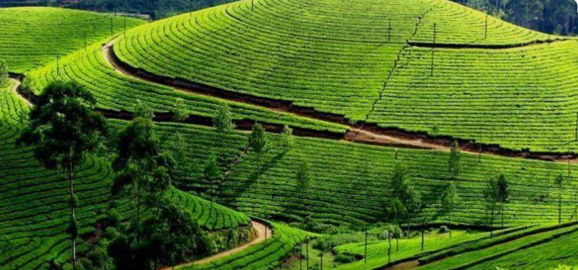
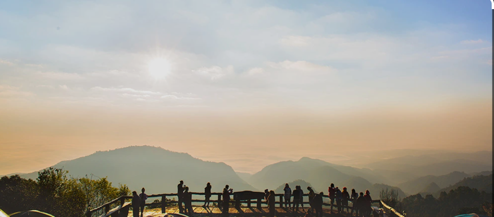
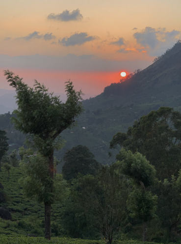
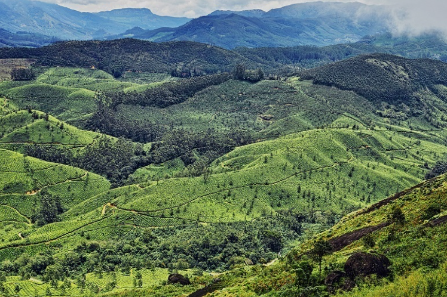
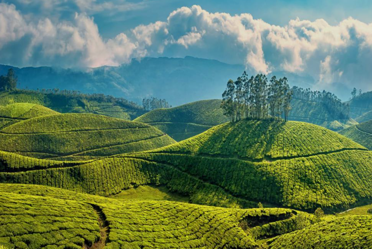

Pothamedu View Point is one of the most popular viewpoints in Munnar, Idukki district, Kerala. It offers breathtaking panoramic views of the surrounding tea, coffee, and cardamom plantations, along with the beautiful hills and valleys of the Western Ghats. The cool climate and peaceful atmosphere make it a favourite destination for tourists and nature lovers.
Visitors can enjoy spectacular sunrise and sunset views, making the viewpoint an excellent place for photography and sightseeing. The fresh mountain air, lush green landscapes, and scenic beauty provide a relaxing experience for families, couples, and adventure enthusiasts. Pothamedu View Point is a must-visit attraction for anyone exploring the natural beauty of Munnar.





Pothamedu View Point is one of the most famous viewpoints in Munnar, located in Idukki District, Kerala. Situated about 5–6 km from Munnar town, it offers breathtaking panoramic views of tea, coffee and cardamom plantations, mist-covered hills and deep valleys. It is a favourite destination for nature lovers, photographers and trekking enthusiasts. 1
Pothamedu has long been an important plantation region of Munnar. As tourism developed, the viewpoint became one of the most visited attractions because of its spectacular scenery and easy accessibility. Today, it is one of the major sightseeing spots in Munnar. 2
The viewpoint offers spectacular views of tea, coffee and cardamom plantations, rolling hills and valleys. On clear days, visitors can even see the Muthirapuzha River and the distant Idukki Arch Dam. It is an ideal place for sunrise, sunset, trekking and photography. 3
The surrounding area is covered with lush tea gardens, coffee plantations, cardamom estates, evergreen forests and many native plants of the Western Ghats, making it a paradise for nature lovers.
Today, Pothamedu View Point is one of the most visited tourist destinations in Munnar. It attracts thousands of visitors every year with its panoramic plantation views, cool climate, trekking opportunities and breathtaking sunrise and sunset scenery. 4